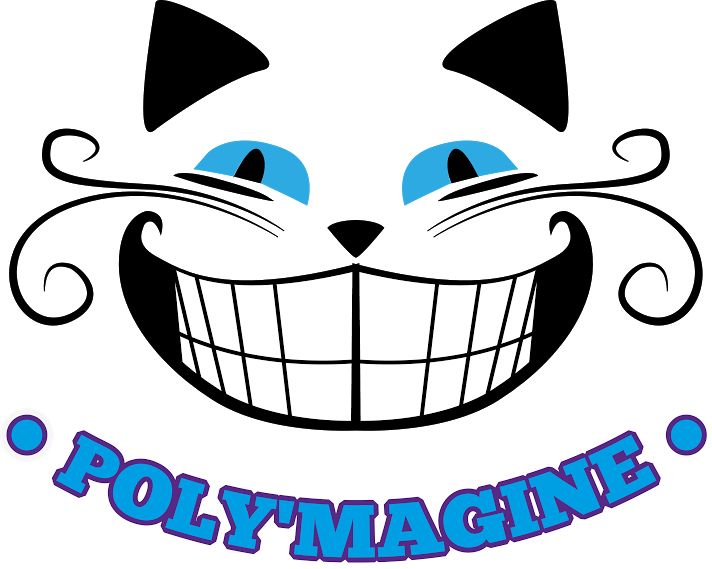
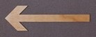

Poly'Magine
Romain L. (Respo Com')


Romain LANCE, GTGC3, est arrivé à Polytech Lille après 2 ans de Prépa PC à Reims. Frappé dès son arrivée par la cohésion et l’ambiance apportée par la BDE, il lui vient rapidement l’envie de s’investir dans l’associatif et tout particulièrement le BDE. Pour lui, la réussite du BDE passe par une bonne promotion des événements, c’est pourquoi il se présente en tant que Respo Com’.